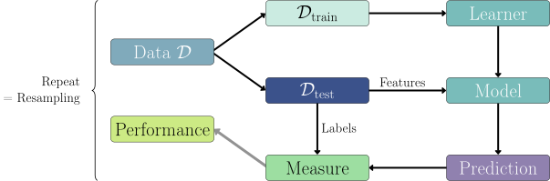

Natalie Foss
美国怀俄明大学（University of Wyoming）
Lars Kotthoff
美国怀俄明大学（University of Wyoming）
在本章中，我们将介绍 mlr3 中实现机器学习基本构件的对象，以及相应的 R6 类。这些构件包括：数据（以及创建训练集和测试集的方法）、机器学习算法（及其训练与预测过程）、通过超参数（hyperparameters）对机器学习算法进行配置，以及用于评估预测质量的评价度量（evaluation measures）。
最简单地说，机器学习（machine learning, ML）就是从数据中学习"关系模型"的过程。监督学习（supervised learning）是 ML 的一个子领域，其中的数据集由带标签的观测组成，也就是说，每个数据点都由特征（features，即用来做出预测的变量）和一个目标（target，即我们试图预测的量）构成。例如，根据汽车的属性（特征），如马力和档位数，来预测汽车的每加仑行驶英里数（目标）就是一个监督学习问题，本书将多次回到这个问题上。在 mlr3 中，我们把数据集及其相关元数据称为任务（tasks, 第 2.1 节）。「任务」一词指我们要解决的预测问题。任务由用于预测的特征和待预测的目标定义，因此任意给定的数据集都可能有多个任务。例如，从马力预测每加仑行驶英里数（mpg）是一个任务，从 mpg 预测马力是另一个任务，而从汽车型号预测档位数又是一个任务。
机器学习/监督学习（Machine Learning/Supervised Learning）